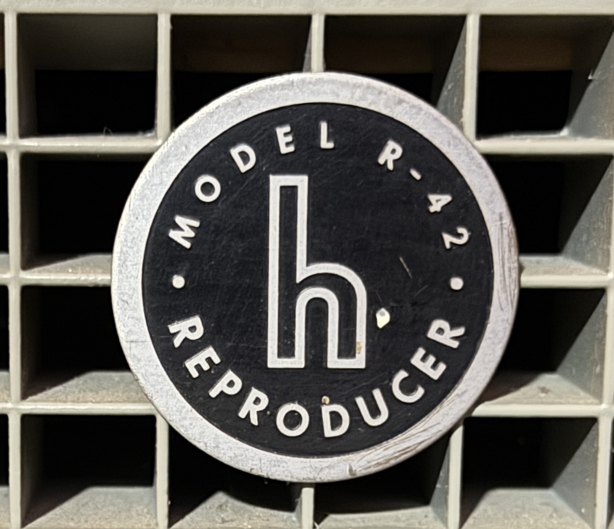
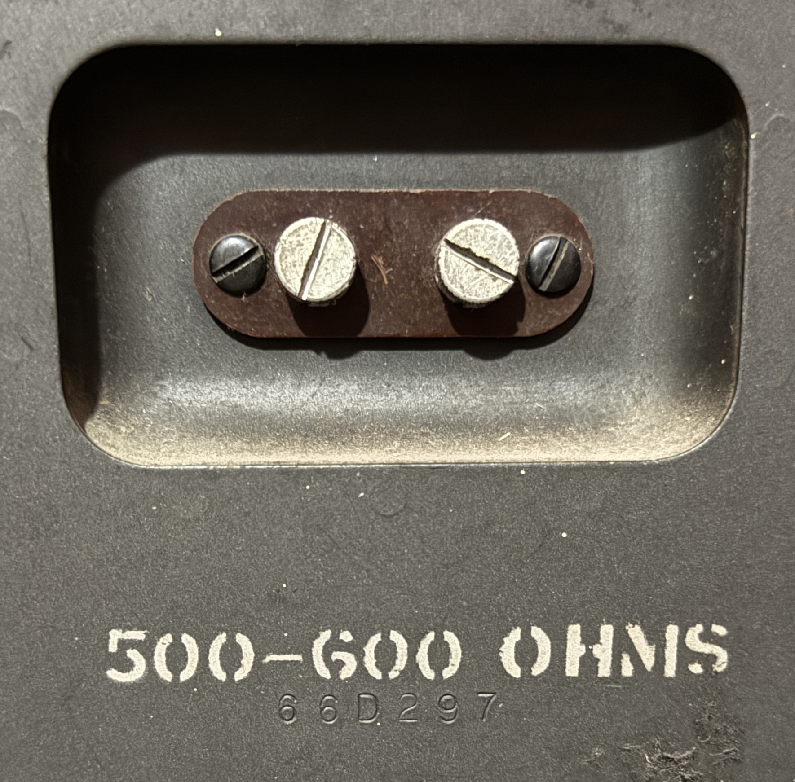

Hallicrafters R-42 Reproducer
Years of Production: 1940-1945
The Hallicrafters R-42 is a vintage speaker, also known as a "Reproducer," designed for use with Hallicrafters radios. It was produced during the early 1940s, specifically from 1940 to 1945. The R-42 is notable for its robust construction and high-quality sound reproduction, making it a popular choice among amateur radio enthusiasts of the time.
Technical Specifications:
- Impedance: 500-600 Ohms
- Power Handling: 10 Watts
- Frequency Response: Wideband, suitable for AM and SSB reception
- Dimensions: Compact design for easy integration with Hallicrafters radios
Notable Features:
- Designed to match the aesthetic of Hallicrafters radios
- High-efficiency speaker driver for clear audio reproduction
- Durable construction for long-lasting performance
Historical Context:
The R-42 was part of Hallicrafters' efforts to provide complete radio systems during World War II. It was used by amateur radio operators and military personnel alike, contributing to the popularity of Hallicrafters equipment during this era.
The R-42 is often sought after by collectors and vintage radio enthusiasts today, not only for its performance but also for its historical significance in the evolution of amateur radio technology.
N4IXTs Hallicrafters R-42 Speaker Other Images
Hallicrafters Logo. Just looks cool!

Close up of the R-42 logo. Hallicrafters referred to their speakers as "Reproducers", hence the R in the model name.

The back of the R-42.

Close up of the terminal lugs for attaching to a radio. Note the 500-600 OHM input!